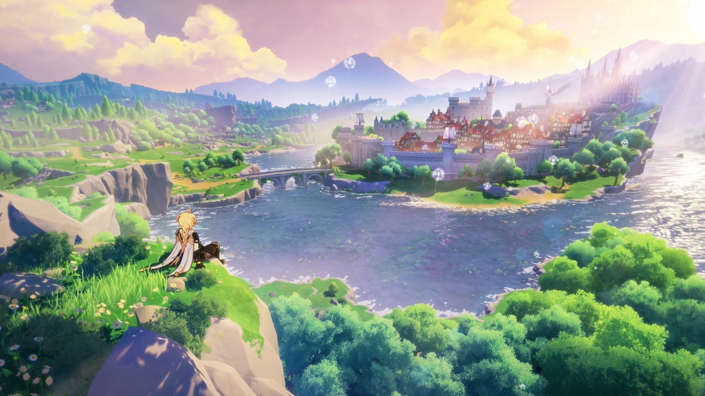

Falando de jogos, você me lembra vários deles.
O primeiro que vem à minha cabeça é Genshin Impact kkkkk. Para ser sincero, eu nunca cheguei a jogar de verdade, mas era um jogo que eu tinha vontade de experimentar com você. Sempre que eu ouvia alguém falar dele, acabava lembrando de você.
Stardew Valley também me lembra muito nós dois. Principalmente da nossa época de fazendeiros kkkkk. Nossas fazendas talvez não tenham ido muito para frente, mas as risadas e os momentos que passamos jogando juntos valeram muito mais do que qualquer plantação.
Você também me lembra os jogos de terror do Roblox. Até hoje eu rio quando lembro da gente jogando. Eu morria de medo em vários momentos, mas, mesmo assim, foram alguns dos momentos mais divertidos e felizes que vivi ao seu lado. De alguma forma, até levar susto ficava divertido quando era com você.
Mas, se existe um jogo que realmente me faz lembrar de você, é Pokémon Fire Red.
Para ser sincero, eu voltei a jogar por sua causa. No começo, era só porque eu queria ter mais assunto para conversar com você. Só que, sem perceber, fui me envolvendo no jogo de novo. E o mais engraçado é que, depois de quase 9 anos começando e abandonando a jornada várias vezes, eu finalmente consegui zerar kkkkk.
E sabe o que eu mais gostava? Não era nem derrotar a Elite Four ou capturar Pokémon raros. Era conversar sobre Pokémon com você. Porque você conseguia transformar algo simples em algo especial.
Por isso, sempre que vejo esses jogos, não penso apenas neles. Eu penso nas lembranças que eles me trazem. E, em quase todas elas, você está presente.